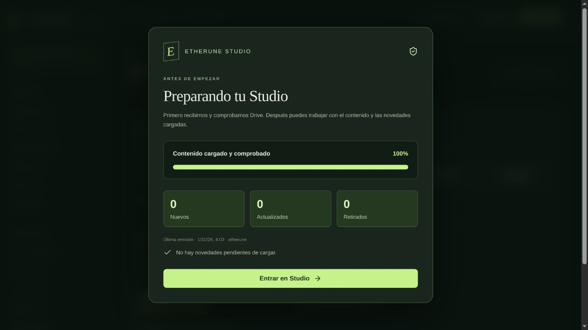
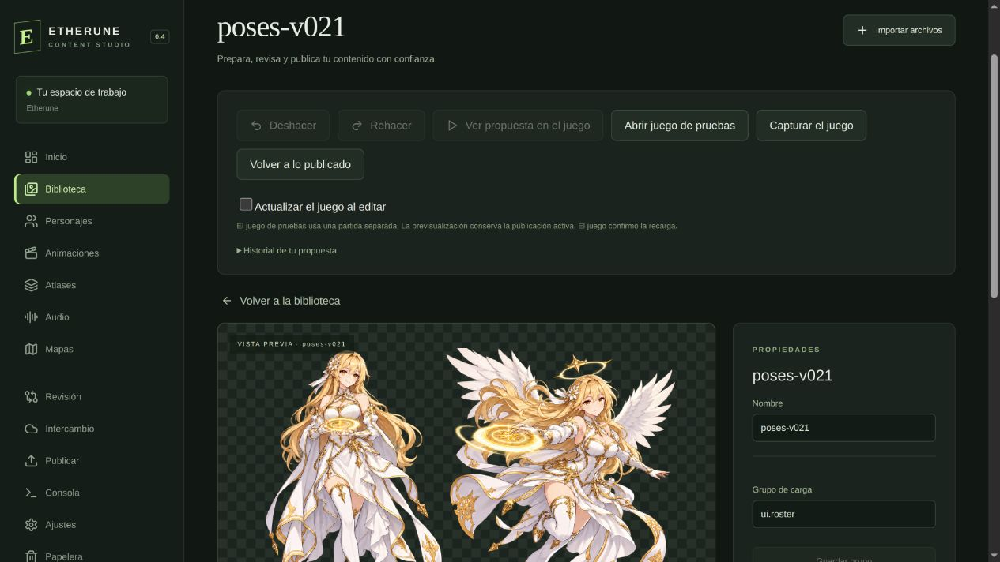
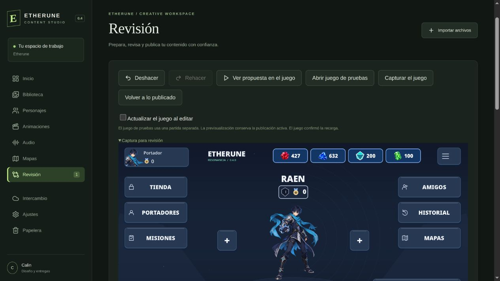
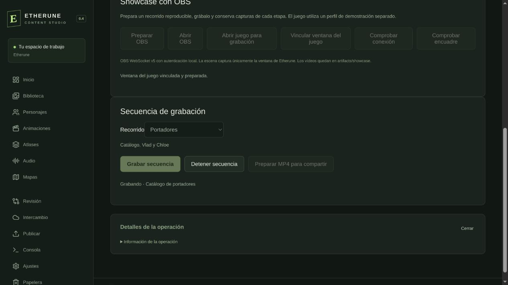

Etherune / 0.4.0 / prototipo en Godot
Del recurso al juego.
Un juego 2D y un Studio para crear, revisar y probar sus recursos. La edición, el historial y la publicación forman parte del mismo flujo.
El juego, tal como está hoy
Studio: un flujo compartido para diseño y desarrollo
- Recibir. Drive carga y comprueba el contenido antes de permitir editar.
- Crear y revisar. Recursos, animaciones, sonidos, etiquetas, autoría, versiones y papelera.
- Probar. La propuesta se ve en el juego; deshacer permite comparar alternativas.
- Entregar y publicar. Diseño entrega su propuesta; desarrollo valida y publica. Al cerrar, se sincroniza.








Buscamos más personas para el equipo
Joana Mauriño Casado colabora en el diseño 2D del proyecto. Queremos sumar diseño 2D, desarrollo con Godot y, especialmente, sonido: efectos, ambientes y mezcla para dar vida al juego.
Laboratorio público de control
Suelta el dedo. Suelta la acción.
El combate empieza en el control. Una diagonal no debe dar velocidad gratis, un segundo dedo no debe robar el stick y perder el foco no puede dejar una dirección pulsada.
Movimiento táctil o de ratón
Pulsa y arrastra dentro de esta zona.
El punto inicial será el centro.
El punto inicial será el centro.
Alternativa con teclado y botones
Estado observable
Radio de esta muestra: 100 px. Zona muerta por eje: 0,12. Fuerza mínima activa: 0,15. Vector limitado a longitud 1.